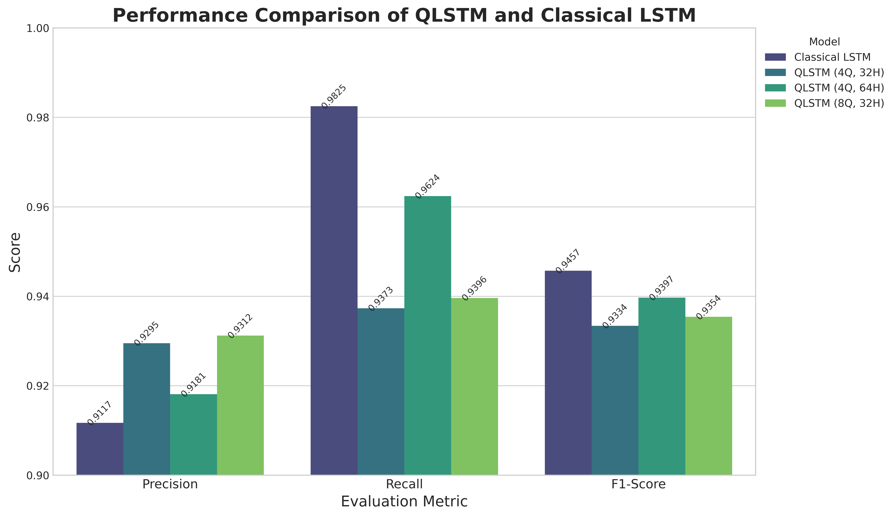

Uncovering the Precision-Recall Trade-off
Performance on CIC-IDS2017 Test Set
| Model Configuration |
Precision |
Recall |
F1-Score |
| Classical LSTM |
0.9117 |
0.9825 |
0.9457 |
| QLSTM-4Q-32H |
0.9250 |
0.9420 |
0.9334 |
| QLSTM-4Q-64H |
0.9181 |
0.9624 |
0.9397 |
| QLSTM-8Q-32H |
0.9396 |
0.9354 |

Key Finding: A Clear Trade-off
- The Classical LSTM achieves the highest Recall and F1-Score, meaning it catches the most attacks.
- All QLSTM models consistently achieve higher Precision, meaning they produce fewer false alarms.